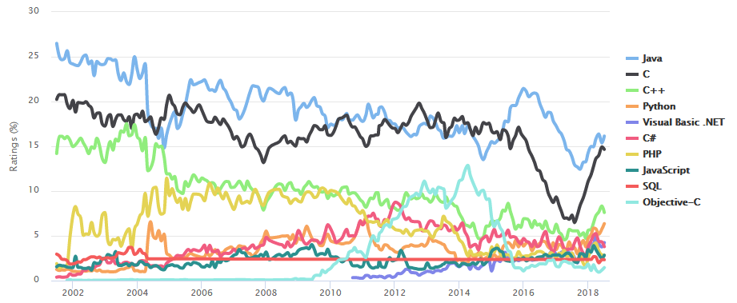

Programming languages Curves page

According to the Stack Overflow survey, the popularity of Java is 45.3 percent, which is the second highest (if not called HTML ,
CSS, SQL — which are mostly non-standalone, supporting languages in the main languages).
The survey points that Java developers earn around $100,000 annually in the U.S.Indeed.com also reports a $100,873 annual salary for a Java developer based in the US